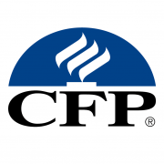

Financieel adviseur in Apeldoorn
Uw verzekeringen en hypotheek, onafhankelijk geregeld
Voor thuis en voor uw bedrijf. U krijgt één vaste adviseur, en het eerste gesprek is gratis.
- Ruim 22 jaar ervaring
- Onafhankelijk sinds 2015
- Certified Financial Planner
Onze diensten
Verzekeringen en hypotheken voor particulieren en ondernemers
Ik regel verzekeringen voor particulieren en ondernemers in Apeldoorn en omgeving, en ook hypotheken. Mijn advies is altijd 100% onafhankelijk. U staat centraal.
Verzekeringen
Wanneer bent u goed verzekerd tegen schade en risico’s? Premies en polisvoorwaarden uitzoeken kost veel tijd. Ik zoek de verzekering die bij u past.
Meer over verzekeringenZakelijke verzekeringen
Aansprakelijkheid, gebouw en inventaris, bedrijfsschade, wagenpark en personeel. Voor ondernemers in Apeldoorn en omstreken.
Meer over zakelijke verzekeringenAOV voor zzp’ers
Wat gebeurt er met uw inkomen als u langere tijd uitvalt? Ik reken het met u door en zoek een arbeidsongeschiktheidsverzekering die past.
Meer over de AOVPolischeck
Ik loop uw bestaande polissen na en zeg wat er te veel is, wat er te weinig is en wat er goed staat. Vaak levert dat premie op.
Vraag een polischeck aanHypotheken
Het afsluiten van een hypotheek is een grote financiële beslissing. Ik help bij kopen, oversluiten en een aflopende rentevaste periode.
Meer over hypothekenFinancieel inzicht
Financieel inzicht is essentieel. Veel mensen weten onvoldoende hoe zij ervoor staan. Als Certified Financial Planner breng ik het voor u in kaart.
Plan een gesprekSchade
Schade? Dan belt u mij
Bij schade wilt u geen keuzemenu. U belt mij. Ik kijk mee welke stappen nodig zijn en neem waar mogelijk het contact met de verzekeraar over.
Bel 06 30 67 97 90
Maandag t/m vrijdag 09:00 tot 17:30. Daarbuiten spreekt u de voicemail in en bel ik u zo snel mogelijk terug.
Welkom bij Finect Financials
Uw vaste financieel adviseur in Apeldoorn
Mijn naam is Fred Koeling. Of het nu gaat om uw verzekeringen, uw hypotheek of het vergelijken van uw bestaande polissen: u krijgt mij aan de lijn en u houdt mij als aanspreekpunt.
Ik werk sinds 2015 als zelfstandig ondernemer, met ruim 22 jaar ervaring in het vak. Finect Financials onderscheidt zich door kwaliteit, duidelijkheid, integriteit en complete service.
Werkwijze
Zo werk ik
Van het eerste gesprek tot de jaren daarna. De eerste stap kost u niets.
- KennismakenU vertelt wat er speelt. Bij u thuis, op uw bedrijf, op kantoor of online. Gratis en vrijblijvend.
- Uitzoeken en vergelijkenIk breng uw situatie in kaart en vergelijk het aanbod van verschillende verzekeraars en banken.
- AdviesU krijgt de keuzes op een rij, met de bedragen erbij. U beslist zelf.
- Regelen en bijhoudenIk verzorg de aanvraag en blijf daarna uw aanspreekpunt, ook bij schade.
Waarom Finect
Waarom kiezen voor Finect Financials?
- Onafhankelijk advies en goede begeleiding. Ik vergelijk het aanbod van verzekeraars en banken, zonder verkoopdoelstelling.
- Persoonlijk contact en korte lijnen. U spreekt steeds dezelfde persoon, ook als er schade is.
- Integriteit en transparantie hoog in het vaandel. Ik zeg het ook als u iets niet nodig heeft.
- Uitstekende voorwaarden en scherpe tarieven. Ik zoek de beste verhouding tussen dekking en premie.
- No-nonsense. Duidelijke taal en een helder advies.

- Onafhankelijk sinds 2015
- Certified Financial Planner/Wft
- AFM-vergunning 12047700
- Kifid 300.017906
- KvK 62201735
Vragen
Vragen over verzekeringen en hypotheken
Staat uw vraag er niet tussen? Bel gerust. Daar hoeft u geen afspraak voor te maken.
Wat doet een onafhankelijk verzekeringsadviseur?
Ik vergelijk verzekeringen van verschillende maatschappijen en zoek uit welke dekking bij u past. Ik ben niet verbonden aan een verzekeraar, bank of keten. Na het afsluiten blijf ik uw aanspreekpunt, ook als er schade is.
Welke verzekeringen kan ik bij u regelen?
Voor particulieren onder meer woonhuis, inboedel, aansprakelijkheid, auto, rechtsbijstand, reis, overlijdensrisico en uitvaart. Voor ondernemers aansprakelijkheid, gebouw en inventaris, bedrijfsschade, wagenpark en personeel. Bent u zzp’er, dan kijken we ook naar een arbeidsongeschiktheidsverzekering. Meer leest u bij verzekeringen en zakelijke verzekeringen.
Kan ik bij u ook terecht voor een hypotheek in Apeldoorn?
Ja. Ik help starters, doorstromers en ondernemers bij het kopen van een huis, en bij oversluiten of een aflopende rentevaste periode. Omdat ik ook uw verzekeringen ken, sluiten uw hypotheek, uw overlijdensrisicoverzekering en uw woonhuisverzekering op elkaar aan.
Wat is een polischeck?
Ik loop uw bestaande polissen na en zeg wat er te veel is, wat er te weinig is en wat er goed staat. Vaak levert dat premie op. Soms blijkt dat alles al klopt, en dat hoort u dan ook.
Waar zit Finect Financials?
Mijn kantoor staat aan de Vlijtseweg 16 in Apeldoorn. Ik kom ook bij u thuis of op uw bedrijf in Ugchelen, Beekbergen, Loenen, Klarenbeek, Twello, Vaassen en de rest van de regio. Woont u verder weg? Ook dan help ik u graag, online of ik kom bij u langs.
Klantervaringen
Wat klanten van mij vinden
Uw verzekeringen doorlichten of een hypotheek regelen doet u niet vaak. Deze klanten vertellen hoe zij het hebben ervaren.
5,0
uit 16 beoordelingen op Google
“Fred heeft de verzekeringen voor onze VVE uitgezocht, we hebben nu een completere verzekering dan we hadden, voor minder geld, top!”
“Fred heeft mij en mijn ouders heel goed geholpen met de schadeafhandeling van de zakelijke bus. Heel vriendelijk en zeer behulpzaam.”
“Onlangs heeft Finect Financials mij geholpen met het regelen van mijn hypotheek en mijn huis- en autoverzekering, en ik ben echt ontzettend blij met hoe dat is gegaan. Fred neemt ruim de tijd om alles uit te leggen, denkt echt met je mee en zoekt actief naar de beste oplossingen voor jouw situatie.”
“Fred heeft verstand van zaken, houdt contact met je en denkt echt met je mee. Heel blij mee!”
“Fred heeft onze hypotheek geregeld en ons uitstekend begeleid gedurende het hele proces. Hij werkt zeer nauwkeurig, is deskundig en gaf ons steeds duidelijke uitleg. We zijn zeer tevreden over de persoonlijke en professionele begeleiding en kunnen Fred en Finect Financials van harte aanbevelen!”
Contact
Bellen, mailen of ik kom langs
Ik kom bij u thuis of op uw bedrijf in Apeldoorn en omgeving. Woont u verder weg? Ook dan help ik u graag, online of ik kom bij u langs. Het eerste gesprek is gratis en vrijblijvend.
- 06 30 67 97 90Maandag t/m vrijdag 09:00 tot 17:30
- info@finect.nlAntwoord binnen één werkdag
- KantoorVlijtseweg 16, 7317 AH Apeldoorn
- WerkgebiedApeldoorn, Ugchelen, Beekbergen, Loenen, Klarenbeek, Twello, Vaassen en omgeving